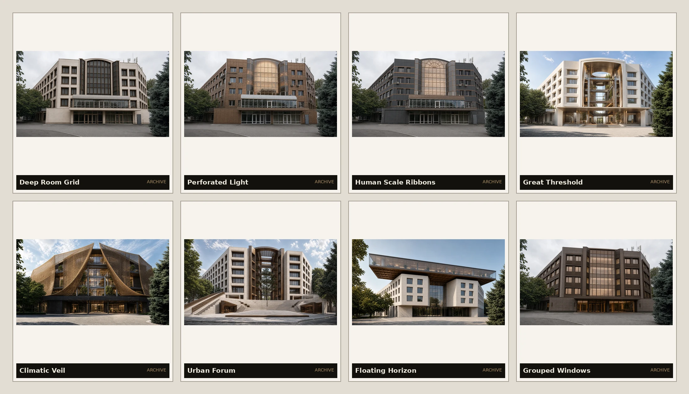

Рекомендуемое направление
Bronze Hinge
× Urban Veranda
Выразительный входной шарнир соединён с открытой верандой, ресторанной террасой и живым первым этажом.
Предложение
02 даёт зданию лицо.
05 даёт ему жизнь.
Вместо выбора одного компромиссного фасада объединены две наиболее сильные идеи: бронзово-стеклянная вертикаль обозначает Qadria в городе, а лёгкая веранда делает ресторан, вход и площадь частью одного гостеприимного сценария.
Из чего собрана рекомендация
Два исходных направления

Сильнейшая архитектурная идентичность: входной шарнир, вертикальные ламели и лёгкий фонарь.

Сильнейшая общественная часть: ресторан, открытая веранда, озеленённый порог и городская жизнь.
Первое впечатление
Вход, кофе и холл
Три кадра показывают не новый фасад, а последовательность прибытия: от бронзового порога — к столу под верандой — и дальше в спокойный одноэтажный холл.

Шарнир, козырёк и порог читаются как одно событие.

Общественная жизнь показана с уровня гостя, а не только с фасадной дистанции.

Концептуальная интерпретация плана первого этажа: широкий угловой холл, компактный ресепшн и ясный путь к лифтам.
Внутри отеля
Один спокойный язык
Светлый минеральный фон, натуральный дуб, тёплый текстиль и небольшие бронзовые детали продолжают фасадную идею без буквального повторения ламелей в каждом помещении.

Ритм дверей и мягкий свет следуют типовой планировке этажей 3–5.

Поворот возле лифтового узла становится ориентиром, а не случайным остаточным пространством.

Категория примерно 18–23 м² плюс отдельная душевая: кровать, рабочая поверхность, хранение и реальный проход без ощущения тесной коробки.

Категория примерно 35–43 м² получает самостоятельную рабочую и посадочную зону, а не просто увеличенную спальню.
Интерьеры — ранние планово-атмосферные гипотезы по PDF. Они не подтверждают расстановку инженерии, отделочные спецификации, нормы или итоговые площади.
Проверка идеи
Не только один красивый рендер
Скетч и условная модель помогают проверить, остаётся ли архитектурный принцип узнаваемым без фотографического света и декора.


Альтернативы
Что ещё рассматривалось
Пять направлений показаны не как равные финалисты. Варианты 02 и 05 стали ингредиентами рекомендации; остальные сохраняются как реальные альтернативы характера.

Самый спокойный и вневременной, но менее узнаваемый.
Даёт рекомендации архитектурное лицо.

Монументальнее, но тяжелее для гостиничной атмосферы.

Самый художественный и самый требовательный к исполнению.
Даёт рекомендации общественную жизнь и гостеприимство.
Отметённые ветки
Полезный архив, но не текущие предложения
Эти исследования помогли определить границы: слишком глубокая сетка, глобальная оболочка, тяжёлая надстройка или чрезмерно театральный общественный жест. Они сохранены как история поиска, а не как варианты для выбора сейчас.
{kind=link}

Геометрия и степень вмешательства в этих кадрах устарели; фасадные мотивы не следует читать как текущий проект.
Решение сейчас
Что важно подтвердить
- 01Подходит ли сочетание сильного бронзового входного шарнира и активной городской веранды?
- 02Первый этаж должен сильнее работать как ресторанное общественное пространство или как более формальный вход в отель?
- 03По настроению Qadria должна быть теплее и бронзовее или светлее и спокойнее?
Этажность и общая структура уже зафиксированы. Сейчас выбирается архитектурный характер и приоритет первого этажа, а не новая масса здания.